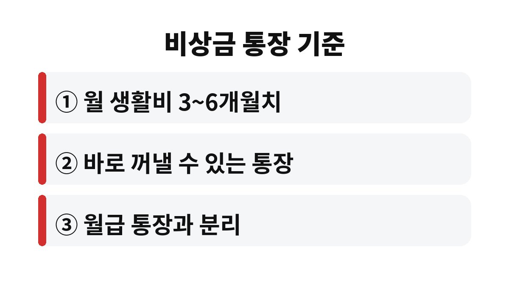
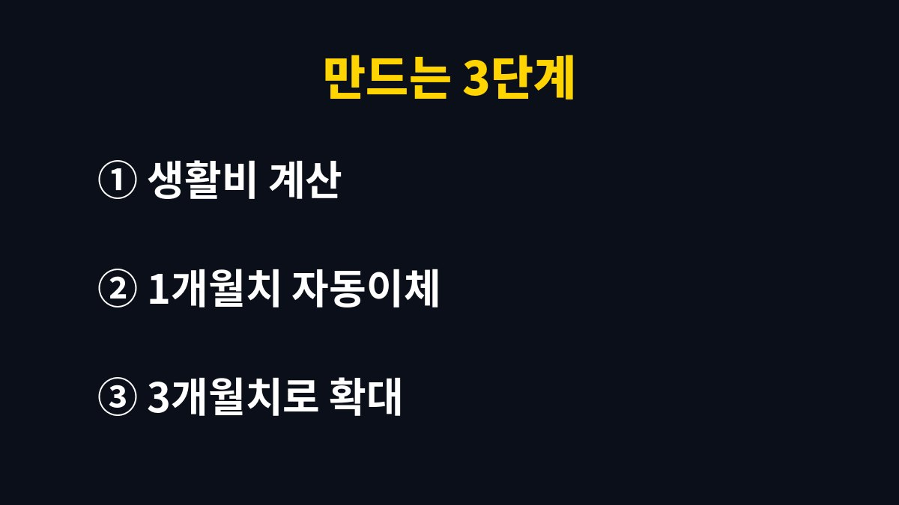

비상금 통장은 보통 한 달 생활비의 3개월치를 기준으로 잡는 것이 가장 널리 알려진 원칙이다. 갑자기 병원비나 수리비가 터졌을 때 비상금이 없는 직장인이라면 카드 할부나 대출부터 떠올리게 되는데, 내 통장에는 지금 몇 달치가 있을까?
비상금 통장이 필요한 이유는 간단하다. 월급은 정해져 있는데 지출은 예고 없이 찾아오기 때문이다. 세탁기가 고장 나거나, 갑자기 병원 신세를 지거나, 경조사가 몰리는 달이 있다. 이럴 때 쓸 돈이 따로 없으면 결국 카드 할부나 현금서비스, 마이너스 통장에 손이 간다.
흔히 월 생활비의 3개월에서 6개월치를 비상금으로 두라고 한다. 이유는 소득이 끊기거나 줄어도 최소한 몇 달은 버틸 수 있어야 하기 때문이다. 이직 준비 기간이나 휴직, 갑작스러운 실직까지 생각하면 3개월은 최소선에 가깝다. 물론 사람마다 상황이 달라서 맞벌이인지, 부양가족이 있는지에 따라 기준은 달라진다.
중요한 건 숫자 자체보다 "급할 때 빚 없이 꺼낼 수 있는 돈이 있느냐"이다. 비상금 통장이 있는 사람과 없는 사람은 같은 사고를 당해도 그 뒤가 완전히 달라진다.

비상금 통장은 수익률보다 언제든 바로 꺼낼 수 있는지가 먼저다. 그래서 입출금이 자유로운 통장이나 하루만 맡겨도 이자를 주는 파킹형 통장이 자주 쓰인다. 반대로 중도 해지하면 이자가 깎이는 적금이나 주식은 비상금으로는 맞지 않는다. 급할 때 손해를 보며 깨야 하기 때문이다.
또 하나 중요한 점은 월급 통장과 분리하는 것이다. 같은 통장에 섞여 있으면 어디까지가 비상금인지 구분이 안 되고, 어느새 생활비로 슬금슬금 쓰게 된다. 통장 이름을 "건드리지 마"처럼 직접 지어 두면 심리적으로도 한 번 더 멈추게 된다. 체크카드를 연결하지 않는 것도 은근히 효과가 크다.
처음부터 3개월치를 한 번에 모으려고 하면 지치기 쉽다. 그래서 작게 시작하는 방법을 많이 쓴다. 월급이 들어오는 날 자동이체로 일정 금액이 먼저 빠져나가게 만드는 것이다. 쓰고 남은 돈을 모으는 게 아니라, 모으고 남은 돈을 쓰는 순서로 바꾸는 셈이다.
예를 들어 이렇게 단계를 나눠 보면 부담이 줄어든다.
1단계: 한 달 생활비를 먼저 계산한다. 월세, 식비, 통신비, 보험료처럼 꼭 나가는 돈만 합친다.
2단계: 그 금액의 1개월치를 첫 목표로 잡고 자동이체를 건다.
3단계: 1개월치가 차면 2개월치, 3개월치로 목표를 올린다.
이렇게 하면 부담은 작게 시작하고 습관은 크게 남는다. 보너스나 환급금처럼 예상 밖의 돈이 들어올 때 일부를 비상금으로 넣는 것도 좋은 방법이다. 연말정산 환급금이 들어오면 그 일부를 바로 비상금 통장으로 옮겨 보자.

비상금은 쓰라고 만든 돈이다. 급한 일에 썼다고 자책할 필요는 없다. 다만 쓰고 나서 다시 채우는 것까지가 한 세트다. 쓴 금액만큼을 다음 달부터 자동이체 금액에 조금씩 더해 채우면 된다.
반대로 비상금을 쓰지 않으려고 무리하게 카드를 먼저 긁는 건 좋지 않다. 카드 할부는 이자가 붙고 한도까지 줄여 놓기 때문에, 이자 한 푼 안 붙는 내 비상금을 쓰는 편이 대부분 이득이다. 비상금이 있다는 건 빚 없이 위기를 넘길 선택지가 있다는 뜻이다.
비상금이 없는 상태에서 큰 지출이 생기면 선택지가 거의 빚뿐이라는 점이 가장 큰 문제다. 반대로 단돈 몇십만 원이라도 따로 모아 둔 사람은 작은 사고에 흔들리지 않는다. 그래서 비상금은 금액의 크고 작음보다 "따로 있다"는 사실 자체가 중요하다. 오늘 바로 통장 하나를 만들고 첫 자동이체를 걸어 보자. 그 작은 시작이 몇 달 뒤 큰 안심으로 돌아온다.
지금 11월은 연말정산 준비와 연말 모임, 새해 계획이 한꺼번에 몰리는 시기다. 지출이 늘기 쉬운 이때 비상금 통장 하나만 정리해 두어도 마음이 훨씬 편해진다. 여러분은 지금 비상금이 몇 달치 있나요? 댓글로 알려 주세요.
도움이 되셨다면 구독해 두시고, 다음 글에서 또 만나요.
본 글은 일반적인 정보 제공이며 투자 권유가 아닙니다. 개인 상황에 따라 다를 수 있습니다.